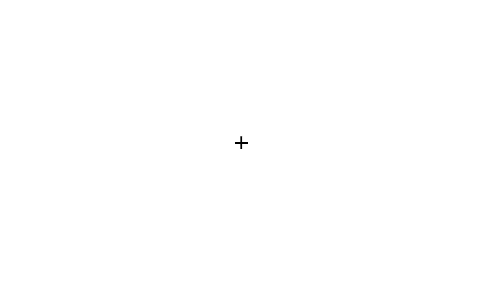
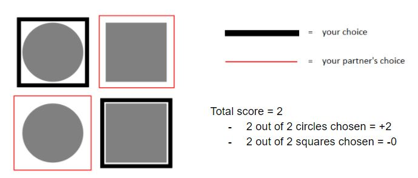

Welcome to the experiment! We are interested in studying how groups of individuals make decisions.This study involves answering questions about yourself and making decisions.
Please note that you will be compensated for completing this HIT only ONCE. You will NOT be paid for additional HITs.
Consent Form
You are invited to participate in a study that is being conducted by Dr. William Cunningham of the Psychology Department at the University of Toronto. Your participation is entirely voluntary. You may stop the study at any time and you have the right to refuse to answer any question without penalty. Anyone who withdraws from the study prior to its completion or asks to have their responses deleted will still receive compensation.
NOTE: To participate in our study, you must be at least 18 years of age and have corrected-to-normal vision.
By selecting to continue below, you indicate that you understand, and agree with, the following points:
1) The purpose of this research is to examine people’s judgments, decisions, evaluations, and recall of affective stimuli.
2) The procedure will be as follows: During a single session lasting around 30 minutes, you will be asked to make evaluations and decisions regarding stimuli in a computerized task. The task may involve the following: making decisions between competing goals in your environment, making decisions or evaluations regarding visual stimuli, or participating in a computer-based task measuring higher cognitive functioning. You may also be asked to complete a set of personality questionnaires depending on the research questions of the study in which you are participating.
3) There is no risk in this study.
4) The benefits of participating in this study are: (a) greater understanding of social and cognitive psychological research, (b) compensation of up to $4.50 ($1.50 base rate, and the potential to earn up to an additional $3.00 depending on the participant's performance).
5) The data you provide will be confidential and will not be released in any individually identifiable form. Data will be available to Dr. Cunningham and other researchers. All data and analyses will be coded by participant number rather than by name. Data will be stored in a locked and secure location.
6) The results of this research may be published in a scholarly publication and/or reported in a scientific presentation, in which case, the identity of all participants will remain fully confidential.
7) If you have any questions or concerns, the researchers will be happy to address them. Please email manager.cunningham@gmail.com.
8) Upon completion of the study, you will receive a full written explanation of the rationale and predictions underlying this study.
9) If you are interested in receiving feedback about the study results, please contact the researchers at manager.cunningham@gmail.com. However, please note that we will only provide aggregated data (group means), not individualized results.
10) If you have questions about your rights as a research participant, or would like to speak with someone not directly involved in the study, please feel free to contact the Office of Research Ethics (ethics.review@utoronto.ca, 416-946-3273). We encourage you to save or print a copy of this consent form for your records.
11) Please note that the Human Research Ethics Program may have confidential access to data to help ensure that participant protection procedures are followed.
12) In rare cases, participants may find some of the stimuli included in the studies to be emotionally evocative or uncomfortable. If you are concerned about the nature of the content in this study, you may contact the Office of Research Ethics at the University of Toronto by telephoning (416) 946-3273 or by sending email to ethics.review@utoronto.ca.
I consent to participate in this study
I do NOT consent to participate in this study
Welcome to the experiment! We are interested in studying how groups of individuals make decisions.
This study involves answering questions about yourself and making decisions.
In this study, you will be paired with another mTurk worker to play a simple decision-making game.
Before you are randomly assigned with another mTurk worker, we will tell you the instructions.
Before the start of each round, you will see a fixation cross (+) in the middle of the screen.
The cross indicates that the shapes will appear shortly.

You and your partner will see a screen displaying four shapes,
including two circles and two squares, as shown below.
The location of each shape may vary.
On each round of the task, you will choose two shapes, and your partner will also choose two shapes.
Different shapes are worth different points. You and your partner’s goal is to choose shapes that win as many points as possible for your team.
- Choose a circle: gain 1 point
- Fail to choose a circle: do not gain 1 point
- Choose a square: do not lose 1 point
- Fail to choose a square: lose 1 point
Points will be awarded based on the number of individual shapes chosen by your team.
This means that if your choice of shape is the same as your partner’s, the value of that shape will only be counted once.
For example, suppose you and your partner both choose the circle on the top left and you also both choose the square on the bottom right.
In this case, your team will receive a total of 0 points. Your team will gain one point for the one circle chosen, and save one point for the one square chosen.
Additionally, your team will lose one point for failing to choose the second square.
However, suppose you choose the square on the top left and the circle on the bottom right, and your partner chooses the square on the top left and the circle on the bottom left.
In this case, your team will receive a total of 2 points. Two points will be gained, (one for each individual circle chosen), and two points will be saved (one for each individual square chosen.

In summary, you can win the most points for your team by making choices that are different from your partner’s choices.
You can choose shapes by pressing two of the following keyboard keys on each trial:
Q - shape on the shape on the upper left.
A - shape on the bottom left.
P - shape on the upper right.
L - shape on the bottom right.
You should respond as quickly and accurately as possible. If you do not respond in time,
an error message will appear on screen, and the experiment will begin the next trial without awarding you any points.
The error message will look like this:
In a couple of days from now, you may receive a bonus payment up to $3.00 extra.
Since you and your partner are on a team, the bonus payment that you receive will depend on the number of points that you and your partner earn by the end of the game.
The more points you and your partner end the game with, the higher your bonus will be.